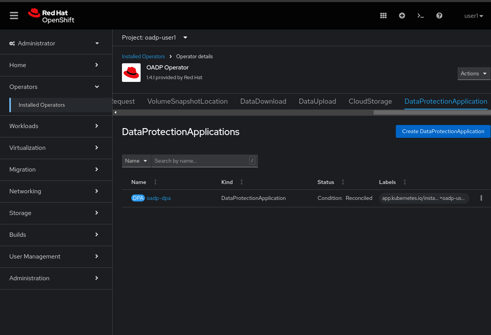

Backup y Restore de máquinas virtuales
Revisa el operador de OADP
-
Navega en el menú de la izquierda a Operators → Installed Operators y revisa que
All projectsestá seleccionado. seleccionaOADP Operator. -
Revisa las Provided APIs disponibles. En este módulo usaremos las funciones de
BackupyRestore. -
Navega a la pestaña llamada DataProtectionApplication. Este objeto representa la configuración de la instancia de OADP desplegada en este cluster.
 -
Selecciona
oadp-dpay revisa la definición YAML.Te en cuenta que la instancia de OADP ha sido configurada añadiendo el plugin de
kubevirty que ha sido configurada para usar el bucket de Red Hat Storage.En un entorno de producción normalmente usarías un sistema de almacenamiento externo, sin embargo, en este lab, estamos utilizando el almacenamiento interno de objetos por conveniencia.
Crear un backup de una máquina virtual
Realizarás una copia de seguridad de la VM fedora02. La selección de los objetos de los que se realizará la copia de seguridad está definida por las etiquetas app y vm.kubevirt.io/name. Esto incluye la definición de VM, los discos y los objetos adicionales que utiliza la máquina virtual, como config maps y secretos.
-
Regrese a la página principal del Operador haciendo clic en el nombre del Operador
-
Ve a la pestaña de Backup y seleccione Create Backup

-
Cambia de vista a YAML view y reemplaza el siguiente contenido:
apiVersion: velero.io/v1 kind: Backup metadata: name: backup-fedora02 labels: velero.io/storage-location: default namespace: openshift-adp spec: hooks: {} orLabelSelectors: - matchLabels: app: fedora02 - matchLabels: vm.kubevirt.io/name: fedora02 includedNamespaces: - vmexamples storageLocation: oadp-dpa-1 ttl: 720h0m0sTenga en cuenta que el contenido de este YAML indica que se realizará una copia de seguridad de cualquier objeto con las etiquetas
app: fedora02en el namespacevmexamplesen la ubicación especificada en la configuración deDataProtectionApplication.Si no tiene la máquina virtual
fedora02, cambie los selectores de etiquetas en el YAML anterior para que coincidan con una máquina virtual en su entorno. -
Espere hasta que la columna
Statuscambie aCompleted. Esto indica que se ha realizado una copia de seguridad exitosa de la máquina virtual.
Restaura un backup
-
Navega a Virtualization → VirtualMachines y elimina la VM
fedora02. -
Vuelve a la pestaña Operators → Installed Operators y selecciona OADP Operator.
-
Cambia a la pestaña de Restore y selecciona Create Restore
-
Cambia a la vista de YAML y reemplaza el contenido con el siguiente:
apiVersion: velero.io/v1 kind: Restore metadata: name: restore-fedora02 namespace: openshift-adp spec: backupName: backup-fedora02 includedResources: [] excludedResources: - nodes - events - events.events.k8s.io - backups.velero.io - restores.velero.io restorePVs: true -
Espera hasta que la columna de
Statuscambie aCompleted.
-
Vuelve a la pestaña de Virtualization → Virtual Machines y comprueba que se ha restaurado la VM
fedora02.
Conclusiones
La protección de las máquinas virtuales es un aspecto crítico de una plataforma de virtualización. OpenShift Virtualization proporciona múltiples métodos que permiten la protección nativa, por ejemplo, utilizando OADP o permitiendo la integración con otras soluciones de terceros. Si tiene cualquier duda sobre cómo proteger las máquinas virtuales, no dude en consultar a los supervisores del taller o comunicarse con su proveedor para determinar su compatibilidad con OpenShift Virtualization.